감정평가사-1차-2교시 (2010-07-04 기출문제)
1과목: 감정평가관계법규
1. 다음 중 건설계약의 계약원가로 특정계약에 직접 관련된 원가에 해당하는 것은?
- 잉여자재의 판매가액
- 계약에 보상이 명시되어 있지 않은 일반관리원가
- 계약에 보상이 명시되어 있지 않은 연구개발원가
- 예상하자보수원가를 포함한 복구 및 보증공사의 추정원가
- 특정계약에 사용하지 않는 유휴 생산설비나 건설장비의 감가상각비
(정답률: 알수없음)

2. 금융상품의 정의에 따라 다음의 항목 중 금융상품으로만 구성되어 있는 것은?
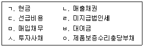
- ㄱ, ㄴ, ㄷ
- ㄱ, ㅂ, ㅇ
- ㄴ, ㄹ, ㅁ
- ㄹ, ㅅ, ㅇ
- ㅁ, ㅂ, ㅅ
(정답률: 알수없음)
3. (주)한국의 20×0년 초 자산총계와 부채총계는 각각 ￦40,000과 ￦10,000이고, 20×0년 말 자산총계와 부채총계는 각각 ￦60,000과 ￦20,000이다. 한편, (주)한국은 20×0년 중에 ￦2,000의 현금배당을 실시하였으며, 20×0년도 당기순이익으로 ￦5,000을 보고하였다. (주)한국이 20×0년도 포괄손익계산서에 인식한 기타포괄손익과 총포괄손익은 얼마인가? (단, 20×0년 중 현금배당 이외 자본거래(주주자격을 행사하는 주주와의 거래)는 없었다고 가정함)
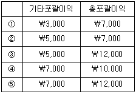
- ①
- ②
- ③
- ④
- ⑤
(정답률: 알수없음)
4. 20×1년 초 (주)한국은 (주)서울의 지분 100%를 취득하여 흡수합병하였고, 그 이전대가로 ￦100,000의 현금을 지급하였다. 또한, 합병관련 컨설팅 수수료로 ￦10,000을 현금으로 지급하였다. 합병 당시 (주)서울의 재무상태표는 다음과 같다.
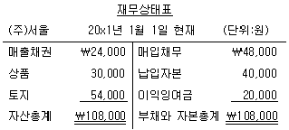
20×1년 초 (주)한국이 (주)서울의 자산에 대해 공정가치를 측정한 결과, 매출채권은 장부금액과 동일하며 상품은 장부금액 대비 10% 높고 토지는 장부금액 대비 50% 높은 것으로 평가되었다. 한편, 부채의 공정가치는 장부금액과 동일하다. 20×1년 초 (주)한국이 영업권으로 계상할 금액은 얼마인가?
- ￦5,000
- ￦10,000
- ￦15,000
- ￦20,000
- ￦23,000
(정답률: 알수없음)
5. (주)한국은 재고자산 수량결정과 관련하여 계속기록법을 채택하고 있다. 다음은 계속기록법으로 작성한 (주)한국의 20×0년의 매출원가와 관련된 자료이다.
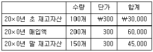
(주)한국이 20×0년 말 재고자산을 실사한 결과 재고자산감모수량이 30개(재고자산감모손실 ￦9,000) 발생하였다. 또한, (주)한국은 20×0년 말 재고자산의 단위당 순실현가능가치가 ￦200으로 하락하여 재고자산평가손실을 인식하여야 한다. (주)한국이 20×0년도에 인식할 재고자산평가손실은 얼마인가? (단, 재고자산감모손실을 먼저 인식한 후 재고자산평가손실을 산출함을 가정하고, 기초재고자산에 대한 평가충당금은 없었음)
- ￦6,000
- ￦9,000
- ￦12,000
- ￦15,000
- ￦18,000
(정답률: 알수없음)
6. (주)감평은 공정가치가 ￦30,000이고 장부금액이 ￦25,000인 토지를, (주)조선의 공정가치가 ￦50,000인 토지와 교환하면서 추가로 현금 ￦15,000을 지급하였다. 이 거래가 상업적 실질이 있다면, (주)감평의 포괄손익계산서에 영향을 미치는 이익은 얼마인가? (단, 취득한 자산과 제공된 자산의 공정가치는 신뢰성 있게 결정할 수 있으며, 취득한 자산의 공정가치가 제공된 자산의 공정가치보다 더 명백하지는 않음)
- ￦0
- ￦5,000
- ￦10,000
- ￦15,000
- ￦20,000
(정답률: 알수없음)
7. 한국채택국제회계기준에 의하면 재무상태표에 구분 표시해야 할 항목에 '투자부동산'이 포함된다. 다음 중 투자부동산의 예로 옳지 않은 것은?
- 제3자를 위하여 건설 또는 개발 중인 부동산
- 직접 소유하고 운용리스로 제공하고 있는 건물
- 운용리스로 제공하기 위하여 보유하고 있는 미사용 건물
- 장래 사용목적을 결정하지 못한 채로 보유하고 있는 토지
- 미래에 투자부동산으로 사용하기 위하여 건설 또는 개발 중인 부동산
(정답률: 알수없음)
8. (주)한국의 20×9년 말 기말재고자산과 관련된 아래의 자료를 이용하여 (주)한국의 20×9년 기말재고자산을 계산하면 얼마인가?
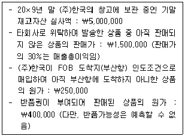
- ￦6,⑤0,000
- ￦6,450,000
- ￦6,850,000
- ￦7,000,000
- ￦7,150,000
(정답률: 알수없음)
9. 다음은 (주)광주의 20×1년도 재고자산에 관한 자료이다. (주)광주는 재고자산의 원가측정방법으로 소매재고법(매출가격환원법)을 선택했으며, 원가흐름에 대한 가정은 선입선출법(FIFO)을 이용한다. 20×1년도의 매출원가는 얼마인가? (단, 재고자산평가손실은 고려하지 않음)
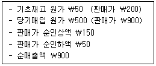
- ￦150
- ￦200
- ￦250
- ￦300
- ￦400
(정답률: 알수없음)
10. (주)한국은 자가 사용할 목적으로 20×1년 초 건물을 취득했으며, 취득인식 후 측정은 원가모형을 적용하고 감가상각방법은 정액법을 사용한다. 아래 자료에 의하면, (주)한국이 20×2년도에 인식할 손상차손 또는 손상차손환입액은 얼마인가? (단, 내용연수와 잔존가치에 대한 추정은 변동 없음)
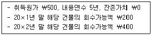
- 손상차손 ￦200
- 손상차손 ￦300
- 손상차손환입 ￦150
- 손상차손환입 ￦200
- 손상차손환입 ￦250
(정답률: 알수없음)
11. 다음은 (주)한국의 20×8년 말 재무상태표에 보고된 매출채권에 대한 대손충당금과 20×9년 중 거래내용이다. 아래 자료를 이용하여 회계처리 할 경우 20×9년도의 당기순이익은 얼마나 감소하는가?
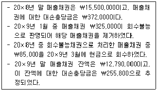
- ￦123,800
- ￦208,800
- ￦210,000
- ￦255,800
- ￦325,000
(정답률: 알수없음)
12. 주당이익 계산에 있어서 당해 기간 및 비교 표시되는 모든 기간의 가중평균유통보통주식수는 잠재적보통주의 전환을 제외하고, 상응하는 자원의 변동 없이 유통보통주식수를 변동시키는 사건을 반영하여 조정한다. 다음 중 상응하는 자원의 변동 없이 유통보통주식수를 변동시키는 사례가 아닌 것은?
- 다른 거래 없이 1주당 액면 ￦100인 주식 5주를 액면 ￦500인 주식 1주로 병합하였다.
- 다른 거래 없이 1주당 액면 ￦5,000인 주식 1주를 액면 ￦500인 주식 10주로 분할하였다.
- 이익준비금을 자본금으로 전입하였다.
- 주식발행초과금을 자본금으로 전입하였다.
- 기존 주주로부터의 차입금을 자본으로 전환하였다.
(정답률: 알수없음)
13. 확정기여제도와 확정급여제도에 관한 설명으로 옳지 않은 것은?
- 확정기여제도에서는 기업이 별개의 실체에 고정 기여금을 납부한다.
- 확정급여제도에서 기업의 의무는 약정한 퇴직급여를 종업원에게 지급하는 것이다.
- 확정기여제도보다 확정급여제도의 회계처리가 비교적 복잡하다.
- 확정급여제도에서는 채무와 비용의 측정에 보험수리적 가정이 요구된다.
- 확정기여제도에서는 기업이 적립금의 투자위험을 부담한다.
(정답률: 알수없음)
14. 20×0년 초 (주)감평은 조류발전을 목적으로 발전설비를 ￦240,000 현금으로 구입하여 설치완료하고 운영을 시작하였다. 이 발전설비는 내용연수 종료 후 원상복구의무가 있으며, 동 복구의무는 발전설비의 설치시점부터 충당부채의 인식요건을 충족시킨다. 내용연수 종료시점에 예상되는 복구비용은 ￦30,000으로 복구비용 산정 시 할인율은 연 10%이다. 발전설비는 정액법(내용연수 4년, 잔존가치 ￦0)으로 감가상각한다. 동 발전설비 및 충당부채와 관련하여 (주)감평이 20×0년도에 인식할 감가상각비와 차입원가는 각각 얼마인가? (단, 10%, 4기간의 ￦1에 대한 현가계수는 0.68301이며 할인율은 변동이 없고, 가장 근사치를 선택할 것)
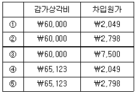
- ①
- ②
- ③
- ④
- ⑤
(정답률: 알수없음)
15. (주)한국리스는 20×0년 초 (주)민국과 운용리스계약을 체결하였다. 리스계약과 관련된 주요 내용은 다음과 같다. 아래 리스계약의 회계처리가 (주)한국리스의 20×0년도 당기순이익을 얼마나 증가시키는가? (단, 리스자산의 사용효익이 감소하는 기간별 형태를 잘 나타내는 별도의 체계적 방법은 없음)
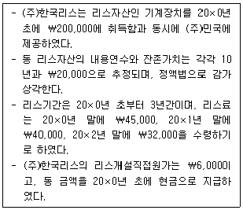
- ￦15,000
- ￦19,000
- ￦21,000
- ￦27,000
- ￦30,000
(정답률: 알수없음)
16. (주)한국의 20×9년도 당기순이익은 ￦3,000,000이며, 20×9년 초 유통보통주식수는 10,000주이다. (주)한국은 20×9년 3월 1일 유상증자를 실시하여 보통주 5,000주를 발행하였으며, 20×9년 8월 1일에는 보통주 1,000주의 자기주식을 취득하였다. 그리고 (주)한국은 20×9년도 당기순이익에 대해 우선주 배당 ￦250,000을 실시하기로 결의하였다. (주)한국의 20×9년도 기본주당순이익은 얼마인가? (단, 가중평균유통보통주식수는 월수를 기준으로 계산함)
- ￦150
- ￦175
- ￦200
- ￦225
- ￦250
(정답률: 알수없음)
17. (주)한국은 임직원의 성과급으로 지급하기 위하여 5,000주의 자기주식을 주당 ￦40에 현금으로 시장에서 취득하였다. (주)한국이 자기주식 취득으로 인한 재무상태표의 변화(현금 ￦200,000 감소는 제외)로 옳은 것은?
- 기타포괄이익누계액 ￦200,000 감소
- 투자주식 ￦200,000 증가
- 금융자산 ￦200,000 증가
- 장기부채 ￦200,000 증가
- 자본 ￦200,000 감소
(정답률: 알수없음)
18. (주)한국은 20×0년 초 광주시로부터 돔구장 건설공사를 수주하였다. 총계약금액은 ￦3,000,000이고, 20×2년 12월에 완공할 예정이다. 공사와 관련된 자료는 다음과 같다. 진행기준을 적용하는 경우 20×1년의 계약손익은 얼마인가? (단, 진행률은 수행한 공사의 측량으로 산정하며, 그 누적진행률은 20×0년 20%, 20×1년 70%, 20×2년 100%라고 가정함)
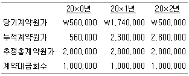
- 계약이익 ￦40,000
- 계약이익 ￦100,000
- 계약이익 ￦120,000
- 계약손실 ￦120,000
- 계약손실 ￦240,000
(정답률: 알수없음)
19. (주)감평은 20×0년 12월 10일 제철설비를 (주)한국에 ￦1,410,000에 판매하고, 동 설비를 사용가능한 상태로 설치해 주기로 하였다. 설치수수료의 총계약금액은 ￦450,000이다. 설치는 설비판매에 부수적으로 제공되는 것은 아니며, 20×0년도에 진행된 설치율은 20%이다. (주)감평이 20×0년도의 수익으로 인식할 설치수수료는 얼마인가?
- ￦90,000
- ￦300,000
- ￦450,000
- ￦1,500,000
- ￦1,860,000
(정답률: 알수없음)
20. 다음 자료를 이용하여 20×0년도 (주)한국이 재고자산 공급자에게 지급한 현금유출액을 구하면 얼마인가? (단, 아래 자료에서 제시된 재고자산감모손실은 비정상적인 것으로 매출원가에는 포함되어 있지 않으며, 재고자산매입은 모두 외상으로 이루어짐)
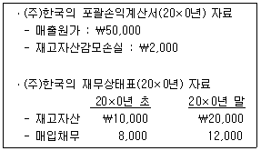
- ￦32,000
- ￦46,000
- ￦50,000
- ￦58,000
- ￦64,000
(정답률: 알수없음)
21. (주)한국의 재무상태표에 나타난 20×9년 말 자산과 부채는 20×9년 초보다 각각 ￦7,000,000과 ￦5,000,000이 증가하였다. 다음의 사건들을 고려하면, (주)한국이 20×9년도 중에 지급한 현금배당액은 얼마인가? (단, 기초 미지급배당금은 없으며, 현금배당액은 20×9년도 중에 모두 지급되었다고 가정함)
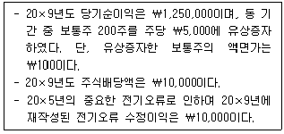
- ￦240,000
- ￦250,000
- ￦260,000
- ￦365,000
- ￦395,000
(정답률: 알수없음)
22. (주)감평은 20×0년 7월 말 당좌예금잔액을 은행에 조회한 결과, ￦4,325,000이라는 회신을 받았다. 한편, (주)감평의 정확한 당좌예금 잔액을 산출하기 위한 관련 자료는 아래와 같다. 아래에 대한 차이 조정 전 20×0년 7월 말 (주)감평의 장부상 당좌예금잔액은 얼마인가?
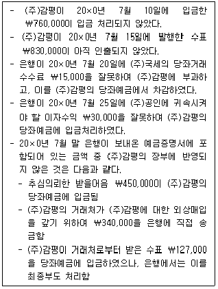
- ￦3,450,000
- ￦3,517,000
- ￦3,577,000
- ￦4,180,000
- ￦4,240,000
(정답률: 알수없음)
23. 20×9년 7월 1일 (주)한국은 자사가 발행한 사채(자기사채)를 취득시점까지의 발생이자를 포함하여 ￦950,000에 취득하였다. 동 사채의 액면금액은 ￦1,000,000이고 액면이자율은 연 7%이며 이자는 매년 말에 지급한다. 한편, 동 사채의 발행시 유효이자율은 연 10%이다. 상각후원가로 측정하고 있는 동 사채에 대한 (주)한국의 20×9년 6월 30일 장부금액이 ￦930,000이라면, 20×9년 7월 1일에 자기사채의 취득과 관련하여 인식할 사채상환손익은 얼마인가? (단, 이자는 월수로 계산함)
- ￦0
- 상환손실 ￦15,000
- 상환손실 ￦20,000
- 상환이익 ￦15,000
- 상환이익 ￦20,000
(정답률: 알수없음)
24. (주)감평은 20×1년 초 액면금액 ￦100,000의 (주)한국의 사채를 ￦95,026에 취득하고, 취득 후 상각후원가로 측정한다. (주)한국 사채의 만기는 20×3년 말이고 취득당시 유효이자율은 연 10%, 표시이자율은 연 8%이며 이자지급일은 매년 말이다. 20×1년 말 이자는 정상적으로 수취되었다. 그러나 20×2년 초 (주)한국의 재무상태 악화로 액면금액은 만기에 회수할 수 있지만 추후 이자수취는 불가능한 것으로 판단하여 손상차손을 인식한다면, 그 손상차손은 얼마인가? (단, 가장 근사치를 선택할 것)
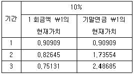
- ￦12,381
- ￦12,431
- ￦13,884
- ￦13,914
- ￦14,015
(정답률: 알수없음)
25. (주)감평은 20×9년 초 액면금액 ￦100,000의 3년 만기 전환사채를 액면금액으로 발행하였다. 전환권을 행사하지 않은 경우 전환사채의 만기일에 액면금액에 추가하여 상환할증금 ￦9,930을 지급한다. 전환사채의 표시이자율은 연 5%이며 매년 말에 지급한다. (주)감평은 당사의 신용으로 만기 3년, 표시이자율 연 10%, 액면금액으로 일반사채를 발행할 수 있다. 이 때 (주)감평이 자본으로 처리하는 전환권의 가치는 얼마인가? (단, 가장 근사치를 선택할 것)
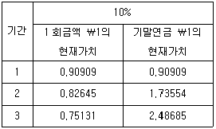
- ￦4,974
- ￦9,739
- ￦12,434
- ￦16,232
- ￦25,971
(정답률: 알수없음)
26. 한국채택국제회계기준에서 연결재무제표와 별도재무제표의 용어에 관한 설명으로 옳지 않은 것은?
- 종속기업은 다른 기업의 지배를 받고 있는 기업으로서 파트너십과 같은 법인격 없는 실체를 제외한다.
- 지배기업은 하나 이상의 종속기업을 가지고 있는 기업이다.
- 지배력은 경제활동에서 효익을 얻기 위하여 재무정책과 영업정책을 결정할 수 있는 능력이다.
- 비지배지분은 종속기업의 지분 중 지배기업에게 직접으로 또는 간접으로 귀속되지 않는 지분이다.
- 별도재무제표는 지배기업, 관계기업의 투자자 또는 공동지배기업의 참여자가 투자자산을 피투자자의 보고된 성과와 순자산에 근거하지 않고 직접적인 지분투자에 근거한 회계처리로 표시한 재무제표이다.
(정답률: 알수없음)
27. (주)한국은 20×9년 중 외국에 있는 금융기관으로부터 만기 3년의 외화표시 부채 ＄1,000을 차입하여 상각후원가로 평가하였다. 차입 일자에 달러 현물의 마감환율은 ＄1 당 ￦1,000이었다. 20×9년 말 현재 달러의 외화현물에 대한 마감환율이 ＄1 당 ￦1,100으로 상승하였다면, 장기외화차입금에 대한 환율의 상승분 ￦100,000은 포괄손익계산서에 어떻게 보고되는가?
- 당기이익으로 보고된다.
- 기타포괄이익으로 보고된다.
- 공정가치평가손실로 보고된다.
- 당기손실로 보고된다.
- 기타포괄손실로 보고된다.
(정답률: 알수없음)
28. (주)한국은 20×0년 초에 사옥건설을 위해 토지를 ￦3,000,000에 구입하였다. 20×0년 말과 20×1년 말 동 토지의 공정가치는 각각 ￦3,500,000과 ￦2,800,000으로 평가되었다. (주)한국이 토지 최초 인식 후 재평가모형을 선택한다면, 위 토지의 재평가로 인해 (주)한국의 20×1년도 당기순이익에 미치는 영향은 얼마인가?
- ￦0
- 감소 ￦200,000
- 감소 ￦700,000
- 증가 ￦200,000
- 증가 ￦700,000
(정답률: 알수없음)
29. (주)감평은 20×0년 초 계약금액(도급금액)이 ￦200,000인 건설계약을 체결하였다. 총추정계약원가는 ￦160,000이며, 20×0년에 발생한 원가는 다음과 같다. 20×0년 말에 인식할 계약이익은 얼마인가? (단, 진행률은 주어진 자료를 이용하여 산정할 것)(문제 오류로 확정답안 발표시 모두 정답처리 되었습니다. 여기서는 1번을 누르면 정답 처리 됩니다.)
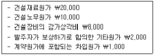
- ￦9,000
- ￦9,500
- ￦10,500
- ￦10,750
- ￦13,000
(정답률: 알수없음)
30. 20×1년 초 (주)여행은 여객용으로 사용하기 위하여 중고 화물용 항공기를 ￦700에 구입하고, 그 중 일부는 현금을 지급하였다. 여객용으로의 교체는 20×1년 말 완료되었고, 20×2년 초부터 운항에 사용되었다. 다음 자료를 이용하여 아래 물음에 답하시오.
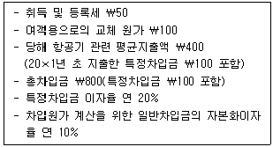
모든 차입금의 차입일은 자본화 개시시점인 20×1년 초이며, 만기는 1년 이상(이자는 연말지급조건)이다. 20×1년 말 항공기의 장부금액은 얼마인가? (단, 특정차입금은 적격자산인 당해 항공기를 취득하기 위한 목적으로 특정하여 차입한 자금을 의미하며, 차입금의 운용으로 인한 수익은 없다고 가정함)
- ￦700
- ￦800
- ￦900
- ￦940
- ￦990
(정답률: 알수없음)
31. 프린터를 생산ㆍ판매하는 (주)한국의 최대생산능력은 연 12,000대이고, 정규시장에서 연간 판매량은 10,000대이다. 단위당 판매가격은 ￦100,000이고, 단위당 변동제조원가는 ￦60,000이며, 단위당 변동판매비와 관리비는 ￦10,000이다. (주)한국은 (주)서울로부터 프린터 4,000대를 단위당 ￦70,000의 가격으로 구입하겠다는 1회성 특별주문을 받았다. (주)한국은 올해 생산능력을 변경할 계획이 없다. (주)한국의 판매비와 관리비는 모두 변동비인데, (주)서울의 주문을 받아들이는 경우 이 주문과 관련된 (주)한국의 판매비와 관리비는 75%가 감소할 것으로 추정된다. (주)한국이 동 주문을 수락하기 위하여 기존시장의 판매를 일부 포기하기로 한다면 증분손익은 얼마인가? (단, 기초ㆍ기말재고는 없음)
- ￦7,500,000 감소
- ￦30,000,000 감소
- ￦7,500,000 증가
- ￦30,000,000 증가
- ￦0
(정답률: 알수없음)
32. (주)한국은 제품 K만을 생산ㆍ판매하고 있다. 20×0년 제품 K의 단위당 판매가격은 ￦5,000이고, 판매액은 ￦100,000,000이었다. 동 연도 총변동원가는 ￦20,000,000이며, 설비에 대한 감가상각비 ￦1,200,000을 포함하여 총고정원가가 ￦10,000,000 발생하였다. 법인세율이 40%라고 가정할 때 (주)한국의 현금흐름분기점 수량은 몇 단위인가? (단, 감가상각비를 제외한 모든 수익과 비용은 현금거래로 이루어진 것이며, 손실이 발생할 경우 법인세가 환급된다고 가정함)
- 1,500단위
- 1,750단위
- 1,800단위
- 2,000단위
- 2,200단위
(정답률: 알수없음)
33. (주)한국의 20×0년 손익분기점 매출액은 ￦120,000이었다. 20×0년 실제 발생한 총변동원가가 ￦120,000이고, 총고정원가가 ￦90,000이었다면 영업이익은 얼마인가? (단, 동 기간 동안 생산능력의 변동은 없음)
- ￦130,000
- ￦150,000
- ￦190,000
- ￦230,000
- ￦270,000
(정답률: 알수없음)
34. (주)한국은 제품 A, B, C 세 가지 결합제품을 생산하고 있다. 관련 자료는 다음과 같다. 결합원가가 분리점에서의 상대적 판매가치에 의하여 배분된다면 제품 B에 배분되는 결합원가는 얼마인가? (단, 아래 표에서 세 가지 제품 모두 분리점에서의 판매가치를 알 수 있으며, 재공품은 없다고 가정함)
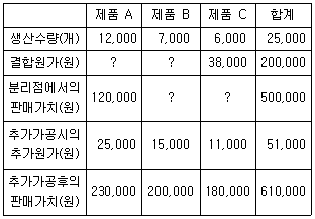
- ￦114,000
- ￦120,000
- ￦124,000
- ￦128,000
- ￦130,000
(정답률: 알수없음)
35. 20×0년 초 설립된 (주)한국의 20×0년과 20×1년의 생산 및 판매와 관련된 자료는 다음과 같다. (주)한국의 20×1년도 전부원가계산에 의한 영업이익이 ￦3,000,000이라면, 초변동원가계산에 의한 영업이익은 얼마인가? (단, (주)한국은 선입선출법(FIFO)을 적용하고 있으며, 재공품은 존재하지 않음)
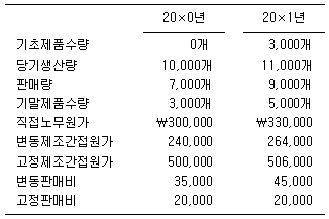
- ￦2,730,000
- ￦2,792,000
- ￦2,812,000
- ￦2,870,000
- ￦2,920,000
(정답률: 알수없음)
36. (주)한국은 종합원가계산제도를 도입하고 있다. 20×0년 1분기 동안 생산관련 자료는 다음과 같다.
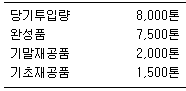
가공원가는 공정전반에 걸쳐 균등하게 발생한다. 기말재공품은 세 개의 완성도로 구성되어 있는데, 기말재공품의 1/4은 완성도가 80%이며, 1/2은 50%, 나머지 1/4은 20%이다. 선입선출법(FIFO)을 적용할 경우 가공원가의 완성품 환산량이 7,960톤이라면 20×0년 1분기 기초재공품의 완성도는 얼마인가? (단, 1분기 기초재공품은 한 개의 완성도로만 구성됨)
- 32%
- 36%
- 40%
- 44%
- 48%
(정답률: 알수없음)
37. (주)한국의 20×0년 기초 및 기말 재고자산은 다음과 같다.
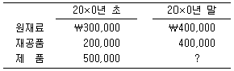
20×0년 중 (주)한국의 원재료 매입액은 ￦1,500,000이었으며, 제조간접원가는 가공원가의 50%인 ￦2,500,000이 발생하였다. (주)한국의 20×0년도 매출액이 ￦7,200,000이고, 이는 매출원가의 120%에 해당한다. 20×0년 말 제품재고액은 얼마인가?
- ￦400,000
- ￦500,000
- ￦600,000
- ￦700,000
- ￦800,000
(정답률: 알수없음)
38. 다음은 20×9년 (주)한국의 직접노무원가에 대한 표준원가 자료이다. 20×9년 중 생산 활동에 투입된 실제작업시간은 얼마인가?
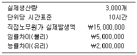
- 20,000시간
- 22,000시간
- 25,000시간
- 30,000시간
- 32,000시간
(정답률: 알수없음)
39. (주)한국은 20×0년에 선박제조업을 개시하였으며, 20×0년 생산 및 원가 자료는 아래와 같다. (주)한국은 직접작업시간을 기준으로 제조간접원가를 예정배부하고 있다. 20×0년도 발생한 실제 제조간접원가는 총 ￦400,000이고, 예정 제조간접원가는 ￦320,000이며, 예정 직접작업시간은 4,000시간이었다. LNG선은 완성된 즉시 선주에게 인도되었으며, 유람선은 20×0년 말까지 인도되지 않았다. 제조간접원가 배부차이를 총원가기준으로 배분할 때 LNG선의 매출원가는 얼마인가?
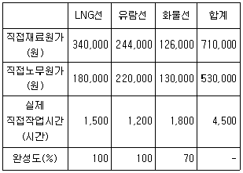
- ￦410,000
- ￦480,000
- ￦532,000
- ￦574,000
- ￦656,000
(정답률: 알수없음)
40. (주)한국은 아래 표와 같이 제조부문과 보조부문을 각각 두 개씩 운영하고 있다. 동력부와 관리부에 집계된 제조간접원가는 각각 ￦200,000과 ￦370,000이다. 각 부문간의 용역수수비율은 아래 표와 같다. 보조부문의 제조간접원가를 상호배부법으로 배부할 때, 제과부에 배부되는 제조간접원가는 얼마인가?
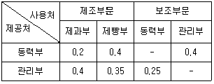
- ￦265,000
- ￦285,000
- ￦3⑤,000
- ￦325,000
- ￦345,000
(정답률: 알수없음)
2과목: 회계학
41. 국토의 계획 및 이용에 관한 법령상 광역도시계획에 관한 설명으로 옳지 않은 것은?
- 광역도시계획이란 국토해양부장관 또는 도지사가 지정한 광역계획권의 장기발전방향을 제시하는 계획을 말한다.
- 광역도시계획은 국토해양부장관, 시ㆍ도지사, 시장 또는 군수가 수립한다.
- 광역도시계획을 수립하거나 변경하려면 미리 공청회를 열어 주민과 관계 전문가 등으로부터 의견을 들어야 한다.
- 시장 또는 군수는 광역도시계획을 수립하거나 변경하려면 도지사의 승인을 받아야 한다.
- 국토해양부장관, 시ㆍ도지사, 시장 또는 군수는 5년마다 광역도시계획에 대하여 그 타당성 여부를 재검토하여 이를 정비하여야 한다.
(정답률: 알수없음)
42. 국토의 계획 및 이용에 관한 법령상 그 결정권자가 국토해양부장관이 아닌 것은?
- 국가계획과 관련된 도시관리계획
- 개발제한구역의 지정에 관한 도시관리계획
- 시가화조정구역의 지정에 관한 도시관리계획
- 수산자원보호구역의 지정에 관한 도시관리계획
- 국토해양부장관의 도시관리계획 조정 요구에 대하여 광역시장이 국토해양부장관이 정한 기한까지 정비하지 아니한 도시관리계획
(정답률: 알수없음)
43. 국토의 계획 및 이용에 관한 법령상 도시계획에 관한 설명으로 옳은 것은?
- 도시계획은 광역도시계획, 도시기본계획, 도시관리계획으로 구분된다.
- 도시계획은 특별시ㆍ광역시ㆍ시 또는 군의 관할 구역에서 수립되는 다른 법률에 따른 토지의 이용ㆍ개발 및 보전에 관한 계획의 기본이 된다.
- 지방자치단체는 도시계획을 수립함에 있어 국토해양부장관이 평가한 도시의 지속가능성 평가결과를 반영하지 않아도 된다.
- 광역시장은 관할 구역에 대하여 다른 법률에 따른 환경에 관한 부문별 계획을 도시기본계획의 내용과 부합되지 않게 수립할 수 있다.
- 지식경제부장관이 20만 제곱미터의 용도지역의 변경에 관한 도시관리계획의 결정을 의제하는 경제자유구역개발계획을 승인하고자 하는 경우에는 중앙도시계획위원회의 심의를 받아야 한다.
(정답률: 알수없음)
44. 국토의 계획 및 이용에 관한 법령상 용도지역 지정 의제에 관한 설명으로 옳지 않은 것은?
- 「항만법」에 따른 항만구역으로서 도시지역에 연접한 공유수면은 도시지역으로 결정ㆍ고시된 것으로 본다.
- 「산업입지 및 개발에 관한 법률」에 따른 국가산업단지로 지정ㆍ고시된 지역은 도시지역으로 결정ㆍ고시된 것으로 본다.
- 「택지개발촉진법」에 따른 택지개발예정지구는 도시지역으로 결정ㆍ고시된 것으로 본다.
- 「어촌ㆍ어항법」에 따른 어항구역으로서 도시지역에 연접한 공유수면은 도시지역으로 결정ㆍ고시된 것으로 본다.
- 관리지역의 산림 중「산지관리법」에 따라 보전산지로 지정ㆍ고시된 지역은 자연환경보전지역으로 결정ㆍ고시된 것으로 본다.
(정답률: 알수없음)
45. 국토의 계획 및 이용에 관한 법령상 토지거래허가에 관한 설명으로 옳은 것은? (단, 다툼이 있으면 판례에 의함)
- 국토해양부장관은 토지거래허가구역의 지정기간이 끝나는 허가구역을 계속하여 다시 허가구역으로 지정할 때 그 지정이 시급한 경우에는 중앙도시계획위원회의 심의를 거칠 필요가 없다.
- 토지거래허가구역의 지정에 대하여 항고소송을 제기할 수 없다.
- 토지거래허가구역 내 토지에 관하여 매매계약을 체결하고 계약금만 주고받은 상태에서 토지거래계약허가를 받은 경우, 매도인은 민법규정에 따라 그 계약을 해제할 수 있다.
- 토지거래허가구역 지정기간 중에 허가구역 안의 토지에 대하여 토지거래계약허가를 받지 않고 토지거래계약을 체결한 후 허가구역 지정이 해제된 경우에도, 토지거래계약허가를 받아야 한다.
- 토지거래허가구역에 거주하는 농업인이 그 허가구역 내에서 농업을 경영하기 위하여 토지거래계약허가를 받은 경우에는 토지의 취득시부터 5년 동안 그 토지를 허가받은 목적대로 이용하여야 한다.
(정답률: 알수없음)
46. 국토의 계획 및 이용에 관한 법령상 도시기본계획에 관한 설명으로 옳지 않은 것은?
- 특별시장ㆍ광역시장ㆍ시장 또는 군수는 지역여건상 필요하다고 인정되면 인접한 특별시ㆍ광역시ㆍ시 또는 군의 관할구역 전부 또는 일부를 포함하여 도시기본계획을 수립할 수 있다.
- 시장 또는 군수는 도시기본계획을 수립하거나 변경하려면 대통령령으로 정하는 바에 따라 도지사의 승인을 받아야 한다.
- 특별시장ㆍ광역시장ㆍ시장 또는 군수는 도시기본계획 수립시 광역도시계획 및 국가계획의 내용을 반영하여야 한다.
- 도시기본계획과 광역도시계획의 내용이 서로 다를 경우 광역도시계획의 내용이 우선한다.
- 특별시장ㆍ광역시장이 도시기본계획을 수립하거나 변경할 경우 지방도시계획위원회의 심의를 거친 후 관계행정기관의 장과 협의하여야 한다.
(정답률: 알수없음)
47. 국토의 계획 및 이용에 관한 법령상 시가화조정구역에 관한 설명으로 옳지 않은 것은?
- 계획관리지역에는 지정될 수 없다.
- 지정권자는 국토해양부장관이다.
- 시가화 유보기간은 도시관리계획으로 정한다.
- 시가화 유보기간은 5년 이상 20년 이내이다.
- 구역지정의 실효고시는 관보에 게재하는 방법에 의한다.
(정답률: 알수없음)
48. 국토의 계획 및 이용에 관한 법령상 개발행위허가의 제한에 관한 설명으로 옳지 않은 것은?
- 국토해양부장관이 개발행위허가를 제한하고자 할 때는 중앙도시계획위원회의 심의를 거쳐야 한다.
- 기반시설부담구역으로 지정된 지역의 개발행위허가의 제한은 1회에 한하여 2년 이내의 기간 동안 할 수 있다.
- 시ㆍ도지사가 개발행위허가를 제한하고자 할 때는 시ㆍ도도시계획위원회의 심의 전에 미리 제한하고자 하는 지역을 관할하는 시장 또는 군수의 의견을 들어야 한다.
- 개발행위로 인하여 주변의 환경ㆍ경관ㆍ미관ㆍ문화재 등이 크게 오염되거나 손상될 우려가 있는 지역에 대한 개발행위허가의 제한은 1회에 한하여 3년 이내의 기간 동안 할 수 있다.
- 시ㆍ도지사의 개발행위 허가의 제한에 대한 고시는 당해 지방자치단체의 공보에 게재하는 방법으로 한다.
(정답률: 알수없음)
49. 국토의 계획 및 이용에 관한 법령상 개발행위허가에 관한 설명으로 옳지 않은 것은? (단, 조례는 고려하지 않음)
- 개발행위허가의 신청내용이 도시계획사업의 시행에 지장을 주는 때에는 개발행위허가를 할 수 없다.
- 토지의 일부를 공공용지 또는 공용지로 하기 위한 토지의 분할은 개발행위허가를 받을 필요가 없다.
- 개발행위허가권자는 개발행위허가 신청에 대하여 특별한 사유가 없으면 15일 이내에 허가 또는 불허가의 처분을 하여야 하는데, 이 15일에는 도시계획위원회의 심의나 관계행정기관의 장의 협의에 소요되는 기간은 포함되지 않는다.
- 개발행위허가권자는 개발행위를 허가하는 경우에 개발행위에 따른 기반시설의 설치, 환경오염방지, 경관, 조경 등에 관한 조치를 할 것을 조건으로 붙일 수 있으며, 이 때 미리 개발행위허가 신청자의 의견을 들을 필요는 없다.
- 개발행위허가권자는 공공시설의 귀속에 관한 사항이 포함된 개발행위허가를 하려면 미리 해당 공공시설이 속한 관리청의 의견을 들어야 한다.
(정답률: 알수없음)
50. 국토의 계획 및 이용에 관한 법령상 토지거래계약에 관한 허가구역에 관한 설명으로 옳지 않은 것은?
- 허가구역의 지정권자는 국토해양부장관이다.
- 허가구역의 지정은 허가구역의 지정을 공고한 날로부터 5일 후에 그 효력이 발생한다.
- 허가구역은 5년 이내의 기간을 정하여 지정할 수 있다.
- 지가가 급격히 상승하는 지역으로서 법령에 의한 개발사업이 진행중이거나 예정되어 있는 지역은 허가구역으로 지정할 수 있다.
- 「민사집행법」에 따른 경매의 경우에도 경매대상물인 토지가 허가구역 안에 있는 경우에는 토지거래계약허가를 받아야 한다.
(정답률: 알수없음)
51. 국토의 계획 및 이용에 관한 법령상 용도지역 안에서의 행위제한에 관한 설명으로 옳지 않은 것은?
- 용도지역에서의 건축물이나 그 밖의 시설의 용도ㆍ종류 및 규모 등의 제한에 관한 사항은 대통령령으로 정한다.
- 「산업입지 및 개발에 관한 법률」에 따른 일반산업단지에서는「산업입지 및 개발에 관한 법률」에서 정하는 바에 따른다.
- 농림지역 중 농업진흥지역인 경우에는「농지법」에서 정하는 바에 따른다.
- 자연환경보전지역 중「수도법」에 따른 상수원보호구역인 경우에는「수도법」에서 정하는 바에 따른다.
- 자연환경보전지역 중 수산자원보호구역인 경우에는「수산자원관리법」에서 정하는 바에 따른다.
(정답률: 알수없음)
52. 국토의 계획 및 이용에 관한 법령상 도시관리계획의 입안에 관한 설명으로 옳은 것은?
- 특별시장ㆍ광역시장ㆍ시장 또는 군수는 인접한 관할 구역 전부 또는 일부를 포함하여 도시관리계획을 입안할 경우 입안권자를 지정하는 협의가 성립되지 아니하면 공동으로 입안하여야 한다.
- 국토해양부장관은 국가계획과 관련된 도시관리계획에 대하여는 관계 중앙행정기관의 장의 요청 없이도 직접 입안할 수 있다.
- 일정한 사항에 관해서는 주민도 도시관리계획을 입안할 수 있으며 이 경우 도시관리계획도서와 계획설명서를 첨부하여야 한다.
- 주민이 입안한 도시관리계획은 당해 지방자치단체에 설치된 지방도시계획위원회의 자문을 거쳐야 한다.
- 국토해양부장관, 시ㆍ도지사, 시장 또는 군수가 도시관리계획을 입안할 경우 주민의 의견을 청취하여야 하며, 주민의 의견 청취에 필요한 사항은 국토해양부장관이 정한다.
(정답률: 알수없음)
53. 국토의 계획 및 이용에 관한 법령상 용적률의 최대한도가 같은 것끼리 묶어 놓은 것은? (단, 조례는 고려하지 않음)
- 제2종전용주거지역-계획관리지역-자연녹지지역
- 보전녹지지역-보전관리지역-계획관리지역
- 준주거지역-준공업지역-근린상업지역
- 제1종전용주거지역-자연녹지지역-생산녹지지역
- 전용공업지역-제3종일반주거지역-유통상업지역
(정답률: 알수없음)
54. 국토의 계획 및 이용에 관한 법령상 도시계획시설사업 시행자의 토지 등의 수용 및 사용에 관한 설명으로 옳지 않은 것은?
- 행정청뿐만 아니라 비행정청인 도시계획시설사업 시행자도 도시계획시설사업에 필요한 토지ㆍ건축물을 수용 또는 사용할 수 있다.
- 시행자는 사업시행을 위하여 특히 필요하다고 인정되는 때에는 도시계획시설에 인접한 토지를 일시 사용할 수 있다.
- 도시계획시설사업에 관한 실시계획의 고시가 있은 때에는「공익사업을 위한 토지 등의 취득 및 보상에 관한 법률」에 따른 사업인정 및 그 고시가 있었던 것으로 본다.
- 시행자는 도시계획시설사업에 필요한 토지에 정착된 물건에 관한 소유권 외의 권리를 수용 또는 사용할 수 있다.
- 시행자는 토지소유자 등과 협의가 성립하지 않을 때에는 도시계획시설사업에 관한 실시계획의 인가 고시가 있은 날부터 1년 이내에 토지수용위원회에 재결신청을 하여야 한다.
(정답률: 알수없음)
55. 국토의 계획 및 이용에 관한 법령상 장기미집행 도시계획시설부지의 매수 청구에 관한 다음 규정 중 ( ) 안에 들어갈 옳은 것을 순서대로 나열한 것은?
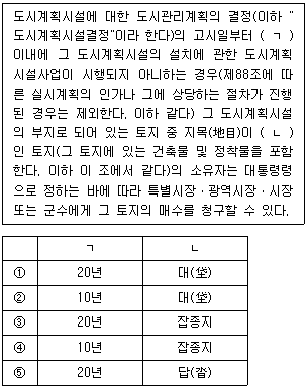
- ①
- ②
- ③
- ④
- ⑤
(정답률: 알수없음)
56. 국토의 계획 및 이용에 관한 법령상 토지거래허가에 관한 설명으로 옳지 않은 것은?
- 토지의 투기적인 거래가 성행할 우려가 있는 지역에 대하여는 토지거래계약에 관한 허가구역으로 지정할 수 있다.
- 「공익사업을 위한 토지 등의 취득 및 보상에 관한 법률」에 따라 토지를 협의취득할 때에도 토지거래계약에 관한 허가를 받아야 한다.
- 토지거래계약에 관한 허가구역에 있는 토지에 관한 소유권을 이전하는 계약을 체결하려는 당사자는 공동으로 시장ㆍ군수 또는 구청장의 허가를 받아야 한다.
- 토지거래계약에 관한 허가구역 안에서 토지거래계약허가를 받지 아니하고 체결한 토지거래계약은 그 효력이 없다.
- 토지거래계약에 관한 허가신청에 대하여 불허가처분을 받은 자는 그 통지를 받은 날부터 1개월 이내에 해당지역의 시장ㆍ군수 또는 구청장에게 해당 토지에 관한 권리의 매수를 청구할 수 있다.
(정답률: 알수없음)
57. 부동산 가격공시 및 감정평가에 관한 법령상 다음 보기 중 옳지 않은 것만으로 모두 묶인 것은?
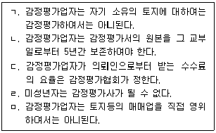
- ㄱ, ㄴ
- ㄱ, ㅁ
- ㄴ, ㄷ
- ㄷ, ㄹ
- ㄹ, ㅁ
(정답률: 알수없음)
58. 부동산 가격공시 및 감정평가에 관한 법령상 표준지공시지가에 관한 설명으로 옳지 않은 것은?
- 토지거래 또는 임대차에 대한 지식부족으로 인하여 이루어진 인근 유사 토지의 거래가격 또는 임대료는 표준지의 적정가격의 조사ㆍ평가 기준이 될 수 없다.
- 표준지공시지가의 공시사항에는 표준지의 단위면적당 가격, 표준지 및 주변토지의 이용상황, 도로ㆍ교통상황, 지세 등이 포함되어야 한다.
- 표준지공시지가에 대한 이의신청은 서면으로 국토해양부장관에게 하되 토지소유자, 토지이용자 등 법률상ㆍ사실상 이해관계인이 할 수 있다.
- 표준지공시지가는 일반적 토지거래의 지표가 되며, 감정평가업자가 개별적으로 토지를 감정평가하는 경우 그 기준이 된다.
- 표준지공시지가는「농어촌정비법」에 따른 농업생산기반 정비사업을 위한 환지ㆍ체비지의 매각 또는 환지신청에 적용된다.
(정답률: 알수없음)
59. 부동산 가격공시 및 감정평가에 관한 법령상 표준지공시지가의 결정에 관한 설명으로 옳지 않은 것은?
- 국토해양부장관은 토지이용상황이나 주변환경 그 밖의 자연적ㆍ사회적 조건이 일반적으로 유사하다고 인정되는 일단의 토지 중에서 표준지를 선정하여야 한다.
- 국토해양부장관은 표준지에 대하여 매년 공시기준일 현재의 적정가격을 조사ㆍ평가한 후 중앙부동산평가위원회의 심의를 거쳐 이를 공시하여야 한다.
- 표준지의 적정가격을 조사ㆍ평가할 때에는 인근유사토지의 거래가격ㆍ임대료 및 당해 토지와 유사한 이용가치를 지닌다고 인정되는 토지의 조성에 필요한 비용추정액 등을 종합적으로 참작하여야 한다.
- 표준지의 적정가격을 조사ㆍ평가할 때에는 둘 이상의 감정평가업자에게 이를 의뢰하여, 평가한 금액의 산술평균치를 기준으로 한다.
- 감정평가업자가 행한 표준지의 조사ㆍ평가가 관계법령을 위반하여 평가되었다고 인정되는 경우에는 당해 감정평가업자가 아닌 다른 감정평가업자로 하여금 다시 조사ㆍ평가하도록 하여야 한다.
(정답률: 알수없음)
60. 부동산 가격공시 및 감정평가에 관한 법령에서 용어의 정의를 하고 있지 않는 것은?
- 아파트
- 단독주택
- 다가구주택
- 다세대주택
- 연립주택
(정답률: 알수없음)
61. 부동산 가격공시 및 감정평가에 관한 법령상 개별공시지가를 결정ㆍ공시함에 있어서 감정평가업자의 검증에 관한 설명으로 옳지 않은 것은?
- 시장ㆍ군수 또는 구청장은 개별공시지가를 결정ㆍ공시하기 위하여 검증을 의뢰하고자 할 때에는 전체 개별토지의 가격에 대한 지가현황도면 및 지가조사자료를 제공하여야 한다.
- 검증의뢰를 받은 감정평가업자는 비교표준지의 선정에 관한 사항 등을 검토ㆍ확인하고 의견을 제시하여야 한다.
- 시장ㆍ군수 또는 구청장은 감정평가업자의 검증이 필요없다고 인정되는 때에는 지가의 변동상황 등 대통령령이 정하는 바에 따라 감정평가업자의 검증을 생략할 수 있다.
- 개발사업이 시행되거나 용도지역ㆍ지구가 변경되는 등의 사유가 발생한 토지에 대하여는 감정평가업자의 검증을 생략할 수 있다.
- 시장ㆍ군수 또는 구청장은 당해 지역의 표준지의 공시지가를 조사ㆍ평가한 감정평가업자 또는 대통령령이 정하는 감정평가실적 등이 우수한 감정평가업자에게 의뢰하여야 한다.
(정답률: 알수없음)
62. 부동산 가격공시 및 감정평가에 관한 법령상 감정평가업자에 대한 과징금의 부과 및 징수에 관한 설명으로 옳은 것은?
- 위반행위로 인한 업무정지가 6개월 미만인 경우로서 과징금을 부과할 수 있는 때에는 과징금최고액의 100분의 20 이상 100분의 50 미만을 과징금으로 부과한다.
- 국토해양부장관은 감정평가법인인 감정평가업자에 대한 업무정지처분에 갈음하여 6억원 이하의 과징금을 부과할 수 있다.
- 과징금부과처분에 대한 이의신청은 국토해양부장관에게 하며, 그 이의신청에 대한 국토해양부장관의 결정에 이의가 있는 자는 행정심판을 제기할 수 없다.
- 국토해양부장관은 과징금납부의무자가 납부 기한 내에 과징금을 납부하지 아니한 경우 납부기한 경과 후 20일 이내에 서면으로 독촉하여야 한다.
- 국토해양부장관은 과징금이나 가산금을 납부하지 아니한 경우 비송사건절차법에 따라 징수하여야 한다.
(정답률: 알수없음)
63. 부동산 가격공시 및 감정평가에 관한 법령상 감정평가서에 관한 설명으로 옳지 않은 것은? (단, 다툼이 있으면 판례에 의함)
- 감정평가업자는 감정평가서의 원본과 그 관련서류를 국토해양부령이 정하는 기간 이상 보존하여야 한다.
- 감정평가서에는 감정평가업자의 사무소 또는 법인의 명칭을 기재하고, 감정평가를 행한 감정평가사가 그 자격을 표시하고 서명ㆍ날인하여야 한다.
- 표준지공시지가의 결정과 관련한 감정평가서에는 평가원인을 구체적으로 특정할 필요는 없지만 각 요인별 참작 내용과 정도가 객관적으로 납득이 갈 수 있을 정도로 설명되어야 한다.
- 감정평가 의뢰인이 감정평가서를 분실하여 재교부를 신청한 경우, 감정평가업자는 정당한 사유가 있는 경우를 제외하고는 감정평가서를 재교부하여야 한다.
- 감정평가서에 거래선례나 평가선례, 거래사례비교법, 원가법 및 수익환원법 등을 모두 공란으로 둔 채, 그 토지의 전년도 공시지가와 세평가격 및 인근 표준지의 감정가격만을 참고가격으로 삼아 별다른 설명 없이 평가의견을 추상적으로만 기재하는 것은 토지의 적정가격을 반영한 것으로 인정하기 어렵다.
(정답률: 알수없음)
64. 부동산 가격공시 및 감정평가에 관한 법령상 개별공시지가에 대한 불복에 관한 설명으로 옳은 것은? (단, 다툼이 있으면 판례에 의함)
- 개별공시지가결정에 대하여 곧바로 행정소송을 제기할 수 없다.
- 개별공시지가의 결정ㆍ공시일부터 30일 이내에 서면으로 이의신청할 수 있다.
- 시장ㆍ군수 또는 구청장은 이의신청을 심사하기 위하여 반드시 감정평가업자에게 검증을 의뢰하여야 한다.
- 시장ㆍ군수 또는 구청장은 이의신청에 대한 심사 결과를 신청인에게 구두로 통지할 수 있다.
- 개별공시지가결정은 취소소송의 대상으로서의 처분성이 인정되지 아니한다.
(정답률: 알수없음)
65. 국유재산법령상 국유재산에 관한 설명으로 옳지 않은 것은?
- 행정재산은「민법」제245조(점유로 인한 부동산소유권의 취득기간)에도 불구하고 시효취득의 대상이 되지 아니한다.
- 판결에 따라 취득하는 경우를 제외하고는 사권이 설정된 재산은 그 사권이 소멸된 후가 아니면 국유재산으로 취득하지 못한다.
- 행정재산에 대한 종전의 사용허가를 갱신받으려는 자는 허가기간이 끝나기 1개월 전에 관리청에 신청하여야 한다.
- 일반재산 중 조림을 목적으로 하는 토지와 그 정착물의 경우에는 대부기간을 20년 이내로 한다.
- 관리청은 행정재산의 사용허가를 받은 자가 관리청의 승인 없이 사용허가를 받은 재산의 원래 상태를 변경하는 경우에는 그 허가를 취소하거나 철회할 수 있다.
(정답률: 알수없음)
66. 국유재산법령상 행정재산의 사용허가에 관한 설명으로 옳은 것은?
- 행정재산의 사용허가기간이 끝난 재산에 대하여 대통령령이 정하는 경우를 제외하고는 10년을 초과하지 아니하는 범위에서 종전의 사용허가를 갱신할 수 있다.
- 관리청은 사용허가한 행정재산을 국가나 지방자치단체가 직접 공용이나 공공용으로 사용하기 위하여 필요하게 된 경우에는 그 허가를 취소할 수 있다.
- 행정재산을 직접 공용ㆍ공공용 또는 비영리공익사업용으로 사용하려는 지방자치단체에 사용허가하는 경우에는 사용료를 면제할 수 없다.
- 관리청은 동일인이 같은 행정재산을 6개월을 초과하여 계속 사용ㆍ수익하는 경우로서 대통령령으로 정하는 경우에는 사용료를 조정할 수 있다.
- 관리청은 행정재산을 사용허가하려는 경우, 사용허가의 목적ㆍ성질ㆍ규모 등을 고려하여 필요하다고 인정되면 대통령령으로 정하는 바에 따라 참가자의 자격을 제한하거나 참가자를 지명하여 경쟁에 부치거나 수의(隨意)의 방법으로 할 수 있다.
(정답률: 알수없음)
67. 국유재산법령상 국유재산에 관한 설명으로 옳지 않은 것은?
- 행정재산으로 기부하는 재산에 대하여 기부자가 자신에게 무상으로 사용허가하여 줄 것을 조건으로 기부하는 경우에는 총괄청은 기부를 받을 수 없다.
- 총괄청은 관리청이 없거나 분명하지 아니한 국유재산에 대하여 그 관리청을 지정한다.
- 일반재산은 대통령령으로 정하는 바에 따라 부동산신탁을 취급하는 신탁업자에게 신탁하여 개발할 수 있다.
- 행정재산의 사용허가를 받은 자가 그 행정재산의 관리를 소홀히 하여 재산상의 손해를 발생하게 한 경우에는 사용료 외에 대통령령으로 정하는 바에 따라 그 사용료를 넘지 아니하는 범위에서 가산금을 징수할 수 있다.
- 총괄청은 국유재산의 효율적인 관리와 처분을 위하여 필요하다고 인정하면 일정한 범위를 정하여 일반재산을 지방자치단체에 일괄하여 양여할 수 있다.
(정답률: 알수없음)
68. 국유재산법령상 일반재산의 매각ㆍ교환 및 양여에 관한 설명으로 옳은 것은?
- 일반재산을 용도를 지정하여 매각하는 경우에는 그 재산의 매각일로부터 10년 이상 지정된 용도로 활용하여야 한다.
- 일반재산의 매각대금은 분할 납부할 수 없다.
- 일반재산의 매각으로 인한 소유권이전은 매각대금의 완납 이전에는 할 수 없다.
- 관리청등이 일반재산을 직접 공용이나 공공용으로 사용하려는 지방자치단체에게 양여하는 경우에는 총괄청과 협의할 필요는 없다.
- 관리청등은 일반재산을 교환하려면 그 내용을 기획재정부장관에게 보고하여야 한다.
(정답률: 알수없음)
69. 다음의 건축물 중 건축법령이 적용되는 것은?
- 「문화재보호법」에 따른 지정문화재
- 관람석의 바닥면적의 합계가 1천 제곱미터 이상인 경정장
- 고속도로 통행료 징수시설
- 궤도의 선로 부지에 있는 플랫폼
- 「문화재보호법」에 따른 가지정 문화재
(정답률: 알수없음)
70. 건축법령상 용도별 건축물의 종류를 연결한 것으로 옳지 않은 것은?
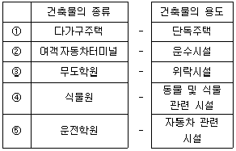
- ①
- ②
- ③
- ④
- ⑤
(정답률: 알수없음)
71. 건축법령상 건축물이 있는 대지를 분할할 수 있는 면적기준으로 옳지 않은 것은? (단, 조례는 고려하지 않음)
- 주거지역 : 60제곱미터 이상
- 상업지역 : 150제곱미터 이상
- 공업지역 : 180제곱미터 이상
- 녹지지역 : 200제곱미터 이상
- 계획관리지역 : 60제곱미터 이상
(정답률: 알수없음)
72. 건축법령상 건축허가권자를 모두 나열한 것은?
- 특별시장, 광역시장, 도지사, 시장ㆍ군수ㆍ구청장
- 국토해양부장관, 특별자치도지사, 시장ㆍ군수ㆍ구청장
- 국토해양부장관, 특별시장, 광역시장, 시장ㆍ군수ㆍ구청장
- 특별시장, 광역시장, 특별자치도지사, 시장ㆍ군수ㆍ구청장
- 국토해양부장관, 특별시장, 광역시장, 도지사, 시장ㆍ군수ㆍ구청장
(정답률: 알수없음)
73. 측량ㆍ수로조사 및 지적에 관한 법령상 토지의 표시 변경에 관한 등기를 할 필요가 있는 경우로서 지적소관청이 관할 등기관서에 등기를 촉탁하여야 하는 사유가 아닌 것은?
- 지적공부에 등록된 지번이 변경된 경우
- 하나의 지번부여지역에 서로 다른 축척의 지적도가 있어 그 지역의 축척이 변경된 경우
- 바다로 된 토지가 원상으로 회복될 수 없어 등록말소 된 경우
- 지적소관청이 직권으로 지적공부의 등록사항 오류를 정정한 경우
- 등기부등본에 의하여 토지대장의 소유자를 변경한 경우
(정답률: 알수없음)
74. 측량ㆍ수로조사 및 지적에 관한 법령상 지적측량 손해배상책임의 보장에 관한 설명으로 옳지 않은 것은?
- 보증보험의 가입은 지적측량업 등록을 신청한 날로부터 10일 이내에 하여야 한다.
- 지적측량업자의 보증보험 가입 금액은 1억원 이상 이어야 한다.
- 대한지적공사의 보증보험 가입 금액은 20억원 이상 이어야 한다.
- 지적측량업자는 보증보험 가입 증명서류를 지적측량업을 등록한 시ㆍ도지사에게 제출하여야 한다.
- 보증보험에 가입한 지적측량수행자가 보증보험기간의 만료로 인하여 다시 보증보험에 가입하려는 경우에는 그 보증기간 만료일까지 다시 보증보험에 가입하여야 한다.
(정답률: 알수없음)
75. 측량ㆍ수로조사 및 지적에 관한 법령상 토지소유자의 합병 신청이 제한되는 경우가 아닌 것은?
- 합병하려는 토지의 지번부여지역이 서로 다른 경우
- 합병하려는 토지에 지상권의 등기가 있는 경우
- 합병하려는 토지의 지목이 서로 다른 경우
- 합병하려는 토지의 소유자가 서로 다른 경우
- 합병하려는 토지의 지적도 및 임야도의 축척이 서로 다른 경우
(정답률: 알수없음)
76. 측량ㆍ수로조사 및 지적에 관한 법령상 토지소유자의 정리에 관한 설명으로 옳지 않은 것은?
- 지적공부에 신규등록하는 토지의 소유자는 등기관이 직접 조사하여 등록한다.
- 지적공부에 등록된 토지소유자의 변경사항은 등기관서에서 등기한 것을 증명하는 등기필 통지서, 등기필증, 등기부 등본ㆍ초본 또는 등기관서에서 제공한 등기전산정보자료에 따라 정리한다.
- 「국유재산법」에 따라 소유자 없는 부동산에 대한 소유자 등록을 총괄청이나 관리청이 신청하는 경우, 지적소관청은 지적공부에 해당 토지의 소유자가 등록되지 아니한 경우에만 등록할 수 있다.
- 등기부에 적혀 있는 토지의 표시가 지적공부와 일치하지 아니하여 토지소유자를 정리할 수 없는 경우 토지의 표시와 지적공부가 일치하지 아니하다는 사실을 관할 등기관서에 통지하여야 한다.
- 지적소관청은 필요하다고 인정하는 경우에는 관할 등기관서의 등기부를 열람하여 지적공부와 부동산등기부가 일치하는지 여부를 조사ㆍ확인하여야 한다.
(정답률: 알수없음)
77. 부동산등기법령상 미등기토지에 대한 소유권보존등기를 신청할 수 없는 자는?
- 시ㆍ구ㆍ읍ㆍ면의 장의 서면에 의하여 자기의 소유권을 증명하는 자
- 토지대장등본에 의하여 자기가 토지대장에 소유자로서 등록되어 있음을 증명하는 자
- 수용으로 인하여 소유권을 취득하였음을 증명하는 자
- 토지대장등본에 의하여 피상속인이 토지대장에 소유자로서 등록되어 있음을 증명하는 자
- 판결에 의하여 자기의 소유권을 증명하는 자
(정답률: 알수없음)
78. 부동산등기법령상 등기부의 을구란에 기재하여 공시하는 등기는?
- 소유권보존등기
- 저당권의 설정등기
- 소유권이전등기청구권보전의 가등기
- 소유권의 말소등기
- 소유권의 변경등기
(정답률: 알수없음)
79. 부동산등기법령상 등기관이 지적공부 소관청 또는 건축물대장 소관청에 지체 없이 그 사실을 알려야 할 경우가 아닌 것은?
- 소유권의 말소등기를 한 경우
- 소유권의 등기명의인 표시의 변경등기를 한 경우
- 동일한 토지에 중복하여 등기된 것을 발견한 경우
- 소유권의 보존등기를 한 경우
- 소유권의 경정등기를 한 경우
(정답률: 알수없음)
80. 부동산등기법령상 등기절차에 관한 설명으로 옳지 않은 것은?
- 가등기는 신청서에 가등기의무자의 승낙서 또는 가처분명령의 정본을 첨부하여 가등기권리자가 신청할 수 있다.
- 등기명의인의 표시의 변경 또는 경정의 등기는 등기명의인 단독으로 신청할 수 있다.
- 상속으로 인한 등기는 등기권리자 단독으로 신청할 수 있다.
- 국가나 지방자치단체가 소유한 부동산에 관한 등기는 등기권리자의 청구에 의하여 관공서가 지체 없이 촉탁서에 등기원인을 증명하는 서면을 첨부하여 등기소에 촉탁하여야 한다.
- 동일한 등기소의 관할 내에 있는 여러 개의 부동산에 관한 등기를 신청하는 경우에는 등기원인이 다를 때에도 동일한 신청서로 등기를 신청할 수 있다.
(정답률: 알수없음)